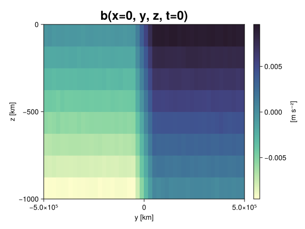
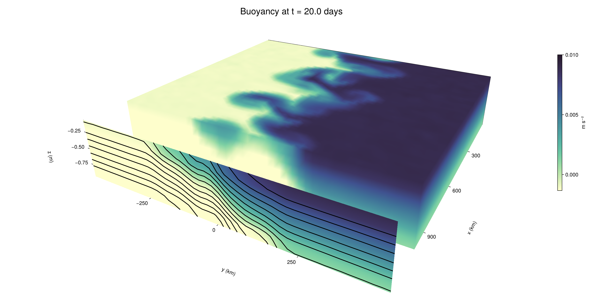

Baroclinic adjustment
In this example, we simulate the evolution and equilibration of a baroclinically unstable front.
Install dependencies
First let's make sure we have all required packages installed.
using Pkg
pkg"add Oceananigans, CairoMakie"using Oceananigans
using Oceananigans.UnitsGrid
We use a three-dimensional channel that is periodic in the x direction:
Lx = 1000kilometers # east-west extent [m]
Ly = 1000kilometers # north-south extent [m]
Lz = 1kilometers # depth [m]
grid = RectilinearGrid(size = (48, 48, 8),
x = (0, Lx),
y = (-Ly/2, Ly/2),
z = (-Lz, 0),
topology = (Periodic, Bounded, Bounded))48×48×8 RectilinearGrid{Float64, Periodic, Bounded, Bounded} on CPU with 3×3×3 halo
├── Periodic x ∈ [0.0, 1.0e6) regularly spaced with Δx=20833.3
├── Bounded y ∈ [-500000.0, 500000.0] regularly spaced with Δy=20833.3
└── Bounded z ∈ [-1000.0, 0.0] regularly spaced with Δz=125.0Model
We built a HydrostaticFreeSurfaceModel with an ImplicitFreeSurface solver. Regarding Coriolis, we use a beta-plane centered at 45° South.
model = HydrostaticFreeSurfaceModel(; grid,
coriolis = BetaPlane(latitude = -45),
buoyancy = BuoyancyTracer(),
tracers = :b,
momentum_advection = WENO(),
tracer_advection = WENO())HydrostaticFreeSurfaceModel{CPU, RectilinearGrid}(time = 0 seconds, iteration = 0)
├── grid: 48×48×8 RectilinearGrid{Float64, Periodic, Bounded, Bounded} on CPU with 3×3×3 halo
├── timestepper: QuasiAdamsBashforth2TimeStepper
├── tracers: b
├── closure: Nothing
├── buoyancy: BuoyancyTracer with ĝ = NegativeZDirection()
├── free surface: ImplicitFreeSurface with gravitational acceleration 9.80665 m s⁻²
│ └── solver: FFTImplicitFreeSurfaceSolver
├── advection scheme:
│ ├── momentum: WENO reconstruction order 5
│ └── b: WENO reconstruction order 5
└── coriolis: BetaPlane{Float64}We start our simulation from rest with a baroclinically unstable buoyancy distribution. We use ramp(y, Δy), defined below, to specify a front with width Δy and horizontal buoyancy gradient M². We impose the front on top of a vertical buoyancy gradient N² and a bit of noise.
"""
ramp(y, Δy)
Linear ramp from 0 to 1 between -Δy/2 and +Δy/2.
For example:
```
y < -Δy/2 => ramp = 0
-Δy/2 < y < -Δy/2 => ramp = y / Δy
y > Δy/2 => ramp = 1
```
"""
ramp(y, Δy) = min(max(0, y/Δy + 1/2), 1)
N² = 1e-5 # [s⁻²] buoyancy frequency / stratification
M² = 1e-7 # [s⁻²] horizontal buoyancy gradient
Δy = 100kilometers # width of the region of the front
Δb = Δy * M² # buoyancy jump associated with the front
ϵb = 1e-2 * Δb # noise amplitude
bᵢ(x, y, z) = N² * z + Δb * ramp(y, Δy) + ϵb * randn()
set!(model, b=bᵢ)Let's visualize the initial buoyancy distribution.
using CairoMakie
# Build coordinates with units of kilometers
x, y, z = 1e-3 .* nodes(grid, (Center(), Center(), Center()))
b = model.tracers.b
fig, ax, hm = heatmap(view(b, 1, :, :),
colormap = :deep,
axis = (xlabel = "y [km]",
ylabel = "z [km]",
title = "b(x=0, y, z, t=0)",
titlesize = 24))
Colorbar(fig[1, 2], hm, label = "[m s⁻²]")
fig
Simulation
Now let's build a Simulation.
simulation = Simulation(model, Δt=20minutes, stop_time=20days)Simulation of HydrostaticFreeSurfaceModel{CPU, RectilinearGrid}(time = 0 seconds, iteration = 0)
├── Next time step: 20 minutes
├── Elapsed wall time: 0 seconds
├── Wall time per iteration: NaN days
├── Stop time: 20 days
├── Stop iteration : Inf
├── Wall time limit: Inf
├── Callbacks: OrderedDict with 4 entries:
│ ├── stop_time_exceeded => Callback of stop_time_exceeded on IterationInterval(1)
│ ├── stop_iteration_exceeded => Callback of stop_iteration_exceeded on IterationInterval(1)
│ ├── wall_time_limit_exceeded => Callback of wall_time_limit_exceeded on IterationInterval(1)
│ └── nan_checker => Callback of NaNChecker for u on IterationInterval(100)
├── Output writers: OrderedDict with no entries
└── Diagnostics: OrderedDict with no entriesWe add a TimeStepWizard callback to adapt the simulation's time-step,
conjure_time_step_wizard!(simulation, IterationInterval(20), cfl=0.2, max_Δt=20minutes)Also, we add a callback to print a message about how the simulation is going,
using Printf
wall_clock = Ref(time_ns())
function print_progress(sim)
u, v, w = model.velocities
progress = 100 * (time(sim) / sim.stop_time)
elapsed = (time_ns() - wall_clock[]) / 1e9
@printf("[%05.2f%%] i: %d, t: %s, wall time: %s, max(u): (%6.3e, %6.3e, %6.3e) m/s, next Δt: %s\n",
progress, iteration(sim), prettytime(sim), prettytime(elapsed),
maximum(abs, u), maximum(abs, v), maximum(abs, w), prettytime(sim.Δt))
wall_clock[] = time_ns()
return nothing
end
add_callback!(simulation, print_progress, IterationInterval(100))Diagnostics/Output
Here, we save the buoyancy, $b$, at the edges of our domain as well as the zonal ($x$) average of buoyancy.
u, v, w = model.velocities
ζ = ∂x(v) - ∂y(u)
B = Average(b, dims=1)
U = Average(u, dims=1)
V = Average(v, dims=1)
filename = "baroclinic_adjustment"
save_fields_interval = 0.5day
slicers = (east = (grid.Nx, :, :),
north = (:, grid.Ny, :),
bottom = (:, :, 1),
top = (:, :, grid.Nz))
for side in keys(slicers)
indices = slicers[side]
simulation.output_writers[side] = JLD2OutputWriter(model, (; b, ζ);
filename = filename * "_$(side)_slice",
schedule = TimeInterval(save_fields_interval),
overwrite_existing = true,
indices)
end
simulation.output_writers[:zonal] = JLD2OutputWriter(model, (; b=B, u=U, v=V);
filename = filename * "_zonal_average",
schedule = TimeInterval(save_fields_interval),
overwrite_existing = true)JLD2OutputWriter scheduled on TimeInterval(12 hours):
├── filepath: ./baroclinic_adjustment_zonal_average.jld2
├── 3 outputs: (b, u, v)
├── array type: Array{Float64}
├── including: [:grid, :coriolis, :buoyancy, :closure]
├── file_splitting: NoFileSplitting
└── file size: 30.7 KiBNow we're ready to run.
@info "Running the simulation..."
run!(simulation)
@info "Simulation completed in " * prettytime(simulation.run_wall_time)[ Info: Running the simulation...
[ Info: Initializing simulation...
[00.00%] i: 0, t: 0 seconds, wall time: 21.669 seconds, max(u): (0.000e+00, 0.000e+00, 0.000e+00) m/s, next Δt: 20 minutes
[ Info: ... simulation initialization complete (22.095 seconds)
[ Info: Executing initial time step...
[ Info: ... initial time step complete (21.494 seconds).
[06.94%] i: 100, t: 1.389 days, wall time: 35.285 seconds, max(u): (1.335e-01, 1.206e-01, 1.610e-03) m/s, next Δt: 20 minutes
[13.89%] i: 200, t: 2.778 days, wall time: 1.029 seconds, max(u): (2.223e-01, 1.766e-01, 1.743e-03) m/s, next Δt: 20 minutes
[20.83%] i: 300, t: 4.167 days, wall time: 1.052 seconds, max(u): (2.981e-01, 2.286e-01, 1.707e-03) m/s, next Δt: 20 minutes
[27.78%] i: 400, t: 5.556 days, wall time: 918.790 ms, max(u): (3.489e-01, 2.838e-01, 1.705e-03) m/s, next Δt: 20 minutes
[34.72%] i: 500, t: 6.944 days, wall time: 853.803 ms, max(u): (4.252e-01, 4.118e-01, 1.840e-03) m/s, next Δt: 20 minutes
[41.67%] i: 600, t: 8.333 days, wall time: 925.662 ms, max(u): (5.376e-01, 6.641e-01, 2.485e-03) m/s, next Δt: 20 minutes
[48.61%] i: 700, t: 9.722 days, wall time: 943.865 ms, max(u): (6.995e-01, 9.802e-01, 3.521e-03) m/s, next Δt: 20 minutes
[55.56%] i: 800, t: 11.111 days, wall time: 1.023 seconds, max(u): (9.792e-01, 1.124e+00, 4.120e-03) m/s, next Δt: 20 minutes
[62.50%] i: 900, t: 12.500 days, wall time: 912.585 ms, max(u): (1.447e+00, 1.198e+00, 4.450e-03) m/s, next Δt: 20 minutes
[69.44%] i: 1000, t: 13.889 days, wall time: 906.040 ms, max(u): (1.494e+00, 1.059e+00, 4.885e-03) m/s, next Δt: 20 minutes
[76.39%] i: 1100, t: 15.278 days, wall time: 1.220 seconds, max(u): (1.433e+00, 1.051e+00, 4.288e-03) m/s, next Δt: 20 minutes
[83.33%] i: 1200, t: 16.667 days, wall time: 997.117 ms, max(u): (1.424e+00, 1.092e+00, 3.935e-03) m/s, next Δt: 20 minutes
[90.28%] i: 1300, t: 18.056 days, wall time: 1.041 seconds, max(u): (1.197e+00, 1.082e+00, 2.813e-03) m/s, next Δt: 20 minutes
[97.22%] i: 1400, t: 19.444 days, wall time: 957.699 ms, max(u): (1.562e+00, 1.302e+00, 2.930e-03) m/s, next Δt: 20 minutes
[ Info: Simulation is stopping after running for 1.013 minutes.
[ Info: Simulation time 20 days equals or exceeds stop time 20 days.
[ Info: Simulation completed in 1.014 minutes
Visualization
All that's left is to make a pretty movie. Actually, we make two visualizations here. First, we illustrate how to make a 3D visualization with Makie's Axis3 and Makie.surface. Then we make a movie in 2D. We use CairoMakie in this example, but note that using GLMakie is more convenient on a system with OpenGL, as figures will be displayed on the screen.
using CairoMakieThree-dimensional visualization
We load the saved buoyancy output on the top, north, and east surface as FieldTimeSerieses.
filename = "baroclinic_adjustment"
sides = keys(slicers)
slice_filenames = NamedTuple(side => filename * "_$(side)_slice.jld2" for side in sides)
b_timeserieses = (east = FieldTimeSeries(slice_filenames.east, "b"),
north = FieldTimeSeries(slice_filenames.north, "b"),
top = FieldTimeSeries(slice_filenames.top, "b"))
B_timeseries = FieldTimeSeries(filename * "_zonal_average.jld2", "b")
times = B_timeseries.times
grid = B_timeseries.grid48×48×8 RectilinearGrid{Float64, Periodic, Bounded, Bounded} on CPU with 3×3×3 halo
├── Periodic x ∈ [0.0, 1.0e6) regularly spaced with Δx=20833.3
├── Bounded y ∈ [-500000.0, 500000.0] regularly spaced with Δy=20833.3
└── Bounded z ∈ [-1000.0, 0.0] regularly spaced with Δz=125.0We build the coordinates. We rescale horizontal coordinates to kilometers.
xb, yb, zb = nodes(b_timeserieses.east)
xb = xb ./ 1e3 # convert m -> km
yb = yb ./ 1e3 # convert m -> km
Nx, Ny, Nz = size(grid)
x_xz = repeat(x, 1, Nz)
y_xz_north = y[end] * ones(Nx, Nz)
z_xz = repeat(reshape(z, 1, Nz), Nx, 1)
x_yz_east = x[end] * ones(Ny, Nz)
y_yz = repeat(y, 1, Nz)
z_yz = repeat(reshape(z, 1, Nz), grid.Ny, 1)
x_xy = x
y_xy = y
z_xy_top = z[end] * ones(grid.Nx, grid.Ny)Then we create a 3D axis. We use zonal_slice_displacement to control where the plot of the instantaneous zonal average flow is located.
fig = Figure(size = (1600, 800))
zonal_slice_displacement = 1.2
ax = Axis3(fig[2, 1],
aspect=(1, 1, 1/5),
xlabel = "x (km)",
ylabel = "y (km)",
zlabel = "z (m)",
xlabeloffset = 100,
ylabeloffset = 100,
zlabeloffset = 100,
limits = ((x[1], zonal_slice_displacement * x[end]), (y[1], y[end]), (z[1], z[end])),
elevation = 0.45,
azimuth = 6.8,
xspinesvisible = false,
zgridvisible = false,
protrusions = 40,
perspectiveness = 0.7)Axis3()We use data from the final savepoint for the 3D plot. Note that this plot can easily be animated by using Makie's Observable. To dive into Observables, check out Makie.jl's Documentation.
n = length(times)41Now let's make a 3D plot of the buoyancy and in front of it we'll use the zonally-averaged output to plot the instantaneous zonal-average of the buoyancy.
b_slices = (east = interior(b_timeserieses.east[n], 1, :, :),
north = interior(b_timeserieses.north[n], :, 1, :),
top = interior(b_timeserieses.top[n], :, :, 1))
# Zonally-averaged buoyancy
B = interior(B_timeseries[n], 1, :, :)
clims = 1.1 .* extrema(b_timeserieses.top[n][:])
kwargs = (colorrange=clims, colormap=:deep, shading=NoShading)
surface!(ax, x_yz_east, y_yz, z_yz; color = b_slices.east, kwargs...)
surface!(ax, x_xz, y_xz_north, z_xz; color = b_slices.north, kwargs...)
surface!(ax, x_xy, y_xy, z_xy_top; color = b_slices.top, kwargs...)
sf = surface!(ax, zonal_slice_displacement .* x_yz_east, y_yz, z_yz; color = B, kwargs...)
contour!(ax, y, z, B; transformation = (:yz, zonal_slice_displacement * x[end]),
levels = 15, linewidth = 2, color = :black)
Colorbar(fig[2, 2], sf, label = "m s⁻²", height = Relative(0.4), tellheight=false)
title = "Buoyancy at t = " * string(round(times[n] / day, digits=1)) * " days"
fig[1, 1:2] = Label(fig, title; fontsize = 24, tellwidth = false, padding = (0, 0, -120, 0))
rowgap!(fig.layout, 1, Relative(-0.2))
colgap!(fig.layout, 1, Relative(-0.1))
save("baroclinic_adjustment_3d.png", fig)
Two-dimensional movie
We make a 2D movie that shows buoyancy $b$ and vertical vorticity $ζ$ at the surface, as well as the zonally-averaged zonal and meridional velocities $U$ and $V$ in the $(y, z)$ plane. First we load the FieldTimeSeries and extract the additional coordinates we'll need for plotting
ζ_timeseries = FieldTimeSeries(slice_filenames.top, "ζ")
U_timeseries = FieldTimeSeries(filename * "_zonal_average.jld2", "u")
B_timeseries = FieldTimeSeries(filename * "_zonal_average.jld2", "b")
V_timeseries = FieldTimeSeries(filename * "_zonal_average.jld2", "v")
xζ, yζ, zζ = nodes(ζ_timeseries)
yv = ynodes(V_timeseries)
xζ = xζ ./ 1e3 # convert m -> km
yζ = yζ ./ 1e3 # convert m -> km
yv = yv ./ 1e3 # convert m -> km49-element Vector{Float64}:
-500.0
-479.1666666666667
-458.3333333333333
-437.5
-416.6666666666667
-395.8333333333333
-375.0
-354.1666666666667
-333.3333333333333
-312.5
-291.6666666666667
-270.8333333333333
-250.0
-229.16666666666666
-208.33333333333334
-187.5
-166.66666666666666
-145.83333333333334
-125.0
-104.16666666666667
-83.33333333333333
-62.5
-41.666666666666664
-20.833333333333332
0.0
20.833333333333332
41.666666666666664
62.5
83.33333333333333
104.16666666666667
125.0
145.83333333333334
166.66666666666666
187.5
208.33333333333334
229.16666666666666
250.0
270.8333333333333
291.6666666666667
312.5
333.3333333333333
354.1666666666667
375.0
395.8333333333333
416.6666666666667
437.5
458.3333333333333
479.1666666666667
500.0Next, we set up a plot with 4 panels. The top panels are large and square, while the bottom panels get a reduced aspect ratio through rowsize!.
set_theme!(Theme(fontsize=24))
fig = Figure(size=(1800, 1000))
axb = Axis(fig[1, 2], xlabel="x (km)", ylabel="y (km)", aspect=1)
axζ = Axis(fig[1, 3], xlabel="x (km)", ylabel="y (km)", aspect=1, yaxisposition=:right)
axu = Axis(fig[2, 2], xlabel="y (km)", ylabel="z (m)")
axv = Axis(fig[2, 3], xlabel="y (km)", ylabel="z (m)", yaxisposition=:right)
rowsize!(fig.layout, 2, Relative(0.3))To prepare a plot for animation, we index the timeseries with an Observable,
n = Observable(1)
b_top = @lift interior(b_timeserieses.top[$n], :, :, 1)
ζ_top = @lift interior(ζ_timeseries[$n], :, :, 1)
U = @lift interior(U_timeseries[$n], 1, :, :)
V = @lift interior(V_timeseries[$n], 1, :, :)
B = @lift interior(B_timeseries[$n], 1, :, :)Observable([-0.009385334923765499 -0.008130582859335836 -0.006889134201562043 -0.005624246184189885 -0.004357801578562178 -0.0031279006437754287 -0.0018695320615887692 -0.0005957359390317433; -0.009398987637512067 -0.008126904339816844 -0.0068688992075971135 -0.005610343331208086 -0.0044248767326919404 -0.003124730215697307 -0.0018854302492779449 -0.0006173189874053056; -0.009377951252056397 -0.00811492063312526 -0.00686696072704366 -0.005638795590889849 -0.004359326979482721 -0.003116466380748867 -0.0018835660932197465 -0.0006279828051571235; -0.009375889038415497 -0.008107936645152386 -0.006865715026614277 -0.005623120403158449 -0.004391052719055547 -0.0031060371216039117 -0.0018555600577615328 -0.0006360306865520676; -0.009382549841056097 -0.008122585850721594 -0.006860847433147994 -0.005626869825367971 -0.004367084107869077 -0.00311447435672915 -0.0018731262942546722 -0.0006176119432814112; -0.009378731044968556 -0.008129994669681994 -0.006881544004530311 -0.005599993319925784 -0.004362290482853001 -0.003153716970965273 -0.0018850693571693744 -0.0006216326640268792; -0.009362971618461625 -0.00811006080334181 -0.006907340358196088 -0.005637635079850417 -0.004393601001587729 -0.0031281982078277273 -0.001875754410362307 -0.0006050228910070479; -0.009372993049923473 -0.008099742644414308 -0.006868852416133643 -0.005619333597283834 -0.004353734320900037 -0.0031149764759764776 -0.0018755297376385023 -0.0006232591337082214; -0.00936386106472425 -0.00811233957369878 -0.006893216714588024 -0.005612117858572023 -0.004382350455202015 -0.0031101675962934045 -0.0018746942369819485 -0.0006103514040072728; -0.009373253352304677 -0.008119434433307815 -0.0068799657070901755 -0.005661110895895118 -0.004351894664304621 -0.0031147348468226026 -0.0018822278883640117 -0.0006371116275796618; -0.009349905516954124 -0.008122403876811962 -0.00688006813393455 -0.005621115645482416 -0.004358073026598041 -0.0031275426508865552 -0.0018842945284682463 -0.0006132559220838915; -0.009372817890948041 -0.008127316418042941 -0.006836381071751388 -0.00561757326713927 -0.00436615439835967 -0.0031605134290623757 -0.001876545551726429 -0.0006091681890545414; -0.009383180869867497 -0.00813149606451455 -0.0068810405038775046 -0.005638325942134759 -0.004377135717229208 -0.0031478233585131425 -0.0018716222427981259 -0.0006155298740602918; -0.009358978164598566 -0.008124042370297157 -0.0068664667078238975 -0.005622670135688207 -0.0043723704790642574 -0.003130126298013531 -0.0018684917284163577 -0.0006314433254760482; -0.009361064986822787 -0.008110611398363844 -0.006842459594033872 -0.005631803698490228 -0.004365445102617586 -0.003089593167997152 -0.0018801059758166785 -0.0006388898504087519; -0.009338257090961997 -0.008131435106871197 -0.0068768061567059564 -0.0056239481795018 -0.004356800422415004 -0.0031383117037857137 -0.0018801998912999591 -0.0006077960159901318; -0.009351671605499831 -0.008115671068774968 -0.006884059678765022 -0.0056240182514863575 -0.004383016052196485 -0.0031090373136398904 -0.0018667478262057175 -0.0006223476064036938; -0.009377830584269347 -0.008102845772035612 -0.006865059617167458 -0.005639548911005938 -0.004363181706302365 -0.0031351516794225127 -0.0018962753968611984 -0.0006404721172858345; -0.009360959227431086 -0.008127546734218801 -0.00682766546531463 -0.005609390719899951 -0.0043659730779879195 -0.003114419392784895 -0.0018654425572790054 -0.0006271832113938291; -0.009389955424769933 -0.008129967805681398 -0.006896250828717876 -0.005613394000281367 -0.004369983895651788 -0.003144217193371953 -0.0018710703412961871 -0.0006265586836355719; -0.009355646205733339 -0.008120708453931175 -0.006858191586003824 -0.00563799748316986 -0.004363084658845078 -0.0031583701126772948 -0.0018643268503373835 -0.0006357646356952318; -0.009375642486825026 -0.008126716764872274 -0.006850974031135097 -0.0056279479676508044 -0.004384097207229163 -0.0031437734173056114 -0.0018738959263935896 -0.000623312528893337; -0.00751221414458957 -0.006231927763206152 -0.004988148121940991 -0.0037275699366431645 -0.002468657516048727 -0.001235743733878951 1.2285286557828071e-5 0.0012496784877898011; -0.005430962560309209 -0.004168158777646916 -0.002903129404056295 -0.0016789603847933473 -0.00043911535378787976 0.000829778190829071 0.0020699036106271267 0.003354291082231698; -0.0033245112318219757 -0.002080501992823371 -0.0008032182805906761 0.0004073152024403602 0.0016514303412199377 0.0029038333392188624 0.004166732272662121 0.005433837390399794; -0.0012313284536231695 1.0469144405224976e-5 0.0012486311378213067 0.00250909596955049 0.0037514336192634953 0.004994943663744465 0.006265225401552957 0.007521825175026561; 0.0006277868412283435 0.0018954146697866988 0.00314389279925646 0.0043854135203033945 0.00563241321769171 0.006886606934946737 0.008130620380367437 0.009387298347631098; 0.0006239160797318071 0.0018856499199118605 0.0031235059928246558 0.0043792679363241615 0.00565139634855556 0.006877622512677301 0.00810989408661408 0.009389660393339985; 0.0006475286443241251 0.0018889029629567719 0.003140389296110774 0.00435920766890216 0.00561828880783848 0.006867042285675302 0.008153151283202306 0.009384301275983468; 0.0006180757368403391 0.0018720827440749904 0.003104266304572571 0.004375862890385379 0.005636317099958829 0.006863231052167136 0.008156474737567395 0.009389017616947147; 0.0006090677921286211 0.0018880474908801999 0.003129703594846179 0.004379360811383059 0.005629529796483013 0.006872353765313585 0.00811088128329843 0.009395743009878742; 0.0006198566141173261 0.001858680152334203 0.0031282624234432906 0.004372940482957004 0.005644909211195419 0.006871221107234318 0.008114945624392416 0.009408060110138875; 0.0006240464166226738 0.0018632465797833516 0.003141192179210611 0.004347022860828186 0.005627579037326647 0.0068655053881860745 0.00811598970343925 0.00938034112081855; 0.0006061287075608393 0.0018724230225075885 0.003141091116729835 0.004384621582008169 0.005608014671140242 0.006875997375681974 0.008127641630417069 0.00936740116289876; 0.000611755549372539 0.0018740376922125642 0.003135547811465215 0.00436977767700505 0.005628506910133263 0.006864310768023487 0.00812929810183167 0.009375680552671564; 0.0006426265327069752 0.0018709584543678062 0.0031334126924769013 0.004366385534540649 0.005637252244467032 0.006876589053461315 0.008092283109892337 0.00934878262681134; 0.0006182164080529955 0.001875427417935156 0.0031199141349565695 0.004368306824002906 0.005605884153301127 0.0068642474245156045 0.008128033394090942 0.009353244360245871; 0.000627727494502163 0.0018579581563475704 0.0031291524490501617 0.004406204870869199 0.00561422167496757 0.006877414420586837 0.00812999431817577 0.00937637474976134; 0.0006292327448380406 0.0018678266071467883 0.0031488639174240066 0.004371846120815026 0.0056288252432238825 0.0068688275855700726 0.008136974336699814 0.009373041955000062; 0.000623817202231329 0.001840602332921875 0.003121046165087304 0.004370380558507512 0.005630643290308952 0.006867281045097393 0.008142825641251086 0.009376916071914364; 0.0006311267757452241 0.0018796270828283813 0.0031142904251680015 0.004378491291534646 0.005637916300469729 0.0068843510578227365 0.008141589675532752 0.009372709331229695; 0.0005921004813679878 0.0018747909829850932 0.0031330830247836387 0.004387717685688242 0.00562275345448834 0.006881990783998994 0.008115951467270177 0.00936771098442993; 0.0006330879292438524 0.0018812859929315314 0.0031263935027197078 0.004386564189269062 0.005627295706555571 0.006865652491207952 0.008132321676331438 0.009397175967516214; 0.0006190701241495983 0.001845297867807119 0.003120173914759536 0.00437631358703684 0.005614469115406251 0.006875048078360919 0.008128004814893555 0.009389048269878618; 0.0006083639592953341 0.0018773119067281626 0.0031193771308943175 0.004374165491719432 0.005620489511561309 0.006881552225812846 0.00810426134765353 0.00935251607351572; 0.0006411182856641426 0.0018617469216823774 0.0031180637362927346 0.004382188650968325 0.005637144845845601 0.006873440650085226 0.008121938403728471 0.009388066869636147; 0.0006030647575445318 0.0018899050210098589 0.0031271957623290048 0.004365028794499941 0.0056566594549505 0.006856375682926359 0.008116218213748291 0.009369272632436502; 0.0006232326701952454 0.0018625357170038764 0.003121786710155261 0.004400508134761447 0.0056164108276638555 0.006865205356110433 0.008096435238209533 0.009361015797362838])
and then build our plot:
hm = heatmap!(axb, xb, yb, b_top, colorrange=(0, Δb), colormap=:thermal)
Colorbar(fig[1, 1], hm, flipaxis=false, label="Surface b(x, y) (m s⁻²)")
hm = heatmap!(axζ, xζ, yζ, ζ_top, colorrange=(-5e-5, 5e-5), colormap=:balance)
Colorbar(fig[1, 4], hm, label="Surface ζ(x, y) (s⁻¹)")
hm = heatmap!(axu, yb, zb, U; colorrange=(-5e-1, 5e-1), colormap=:balance)
Colorbar(fig[2, 1], hm, flipaxis=false, label="Zonally-averaged U(y, z) (m s⁻¹)")
contour!(axu, yb, zb, B; levels=15, color=:black)
hm = heatmap!(axv, yv, zb, V; colorrange=(-1e-1, 1e-1), colormap=:balance)
Colorbar(fig[2, 4], hm, label="Zonally-averaged V(y, z) (m s⁻¹)")
contour!(axv, yb, zb, B; levels=15, color=:black)Finally, we're ready to record the movie.
frames = 1:length(times)
record(fig, filename * ".mp4", frames, framerate=8) do i
n[] = i
endThis page was generated using Literate.jl.